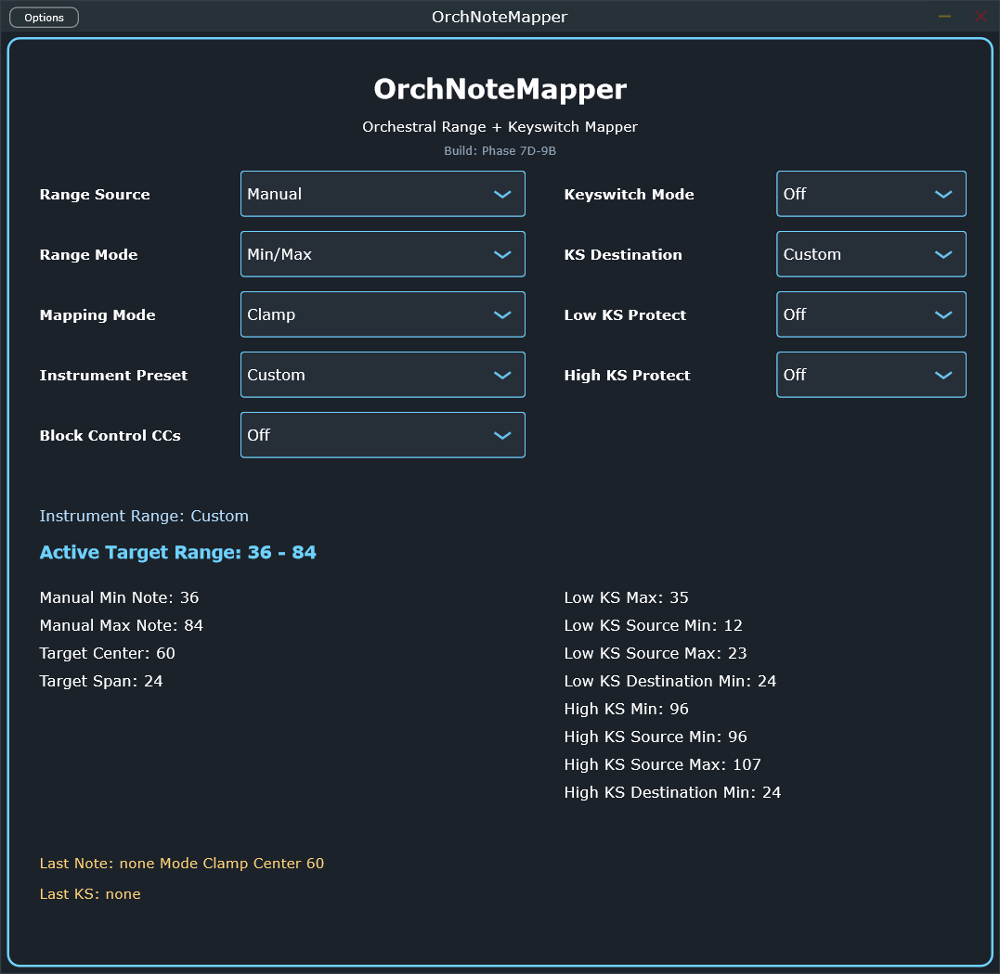

OrchNoteMapper takes whatever range a note arrives in and folds it into this instrument's own playable/sounding range, then optionally remaps a shared keyswitch vocabulary onto this instrument's own articulation zone. It's the last Orch device on the note path — by the time MIDI leaves it, everything the instrument's sample library actually needs to see should already be correct.
9 controls, two columns. Left half decides how a note's range gets folded; right half decides whether/how a keyswitch gets remapped. The panel below the controls is a live readout, not something you set directly — see §03.

The panel below the controls in the screenshot — read-only, live. It's how you confirm what's actually happening, and where the geometry params below (§04) become visible even though most have no dedicated dial.
Active Target Range is the range folding actually resolves to right now — the one number that matters if Range Source/Mode/Preset together aren't doing what you expect. Last Note / Last KS at the bottom are the most recent input/output pair seen — the fastest way to confirm a mapping live, without opening a DAW meter.
Internally, the input→output mapping for each (channel, note) is now a small FIFO queue, not a single remembered value — a real live-rig bug (2026-09-28): two overlapping same-(channel, pitch) note-ons (a genuine legato re-strike, or upstream relayed content that wasn't truly monophonic) used to have the second note-on silently overwrite the first's own remembered output pitch, so one of the two real note-offs resolved to the wrong mapping and left a voice stuck downstream — exactly the pattern OrchGate's own stuck-note watchdog kept having to recover. Note-on pushes, note-off pops the oldest entry, so N overlapping occurrences now always resolve to N correctly-paired note-offs. No control for this — it's always on, and there's nothing to configure.
12 more real parameters with no dedicated on-screen dial — visible only in §03's readout, but fully host-automatable (draw an automation lane in Bitwig, or let Range Source = Preset fill them for you). This is the layer most people never think to look for, so it's worth listing explicitly rather than leaving it a mystery why a number changes on its own.
| Parameter | Range | Default | Sets |
|---|---|---|---|
| minNote | 0–127 | 36 | Manual target range, low edge (Range Mode = Min/Max) |
| maxNote | 0–127 | 84 | Manual target range, high edge (Range Mode = Min/Max) |
| centerNote | 0–127 | 60 | Manual target range center (Range Mode = Center/Span) |
| windowSpan | 0–127 | 24 | Manual target range width around the center (Range Mode = Center/Span) |
| lowKsMax | 0–127 | 35 | Upper bound of "low" for range-folding purposes, once Low KS Protect is on |
| lowKsSourceMin / lowKsSourceMax | 0–127 | 12 / 23 | The shared low-keyswitch window this instrument listens for (ecosystem default 12–23) |
| lowKsDestinationMin | 0–127 | 24 | Where a matched low keyswitch gets rewritten to |
| highKsMin | 0–127 | 96 | Lower bound of "high" for range-folding purposes, once High KS Protect is on |
| highKsSourceMin / highKsSourceMax | 0–127 | 96 / 107 | The shared high-keyswitch window this instrument listens for |
| highKsDestinationMin | 0–127 | 24 | Where a matched high keyswitch gets rewritten to |
The full list behind control 4, for when Range Source = Preset. Each fills the target range from that instrument's real practical sounding range.